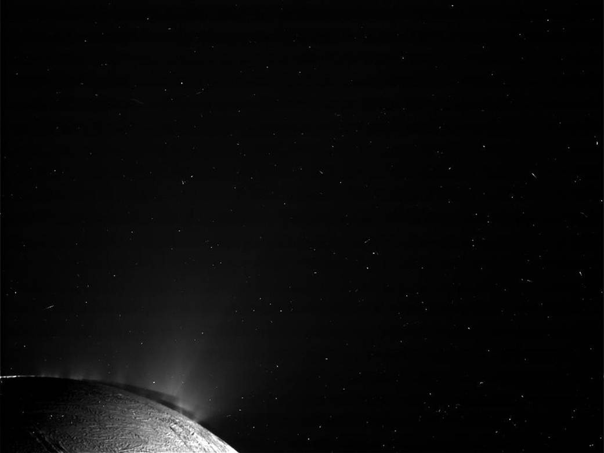

Intorno a un pianeta c’è un sistema, non un contorno
Accanto a Giove, quattro piccoli punti possono cambiare disposizione durante la stessa serata. Sono un buon inizio per comprendere che i satelliti non sono decorazioni immobili. Le loro orbite collegano posizione, tempo e gravità. Una sequenza di osservazioni trasforma il paesaggio telescopico in un sistema dinamico, anche quando il disco delle lune resta troppo piccolo per mostrare dettagli.
Un satellite naturale orbita attorno a un corpo più grande, ma le due masse interagiscono e si muovono rispetto a un centro di massa comune. «Luna» non indica una composizione unica: esistono corpi rocciosi, ghiacciati e misti, con dimensioni e storie molto diverse. Alcuni sono arrotondati, altri irregolari; alcuni hanno attività interna, altri conservano soprattutto tracce di un passato remoto.
Gli anelli sono invece popolazioni di particelle e frammenti in orbita. Visti da lontano sembrano una superficie continua, ma non sono un disco rigido che gira tutto alla stessa velocità. Il confronto fra lune e anelli permette di distinguere un corpo mantenuto insieme dalla propria struttura da una distribuzione di molti corpi piccoli.
Le lune di Giove: seguire, identificare, confrontare
Io, Europa, Ganimede e Callisto sono i quattro grandi satelliti galileiani. Al piccolo telescopio li si riconosce spesso come punti vicini al pianeta. Non assumere che l’ordine dei punti coincida con quello delle distanze orbitali: la proiezione può mettere una luna più esterna apparentemente vicino al disco. Per identificarle servono un istante e una previsione coerente con l’orientamento dell’immagine.
Una luna può transitare davanti al pianeta, essere occultata dietro di esso o entrare nella sua ombra. Transito, occultazione ed eclisse non sono sinonimi. Può inoltre essere distinguibile l’ombra del satellite proiettata sulle nubi di Giove. La scena richiede di sapere dove si trova il Sole oltre alla linea di vista terrestre: due corpi vicini nella foto non spiegano da soli il fenomeno.
I quattro mondi hanno storie differenti. Io mostra intensa attività vulcanica; Europa presenta una superficie ghiacciata e forti evidenze di un oceano interno; Ganimede e Callisto aggiungono altri confronti di composizione ed evoluzione. Un oceano interno non è fotografato come una distesa liquida in superficie: il quadro deriva da più misure e modelli. La parola «oceano» deve conservare la distinzione fra posizione, evidenza e interpretazione.
Un esercizio di osservazione: una luna è sparita?
Prima di concludere che il punto non sia presente, controlla se dovrebbe trovarsi dietro Giove, nella sua ombra o davanti al disco. Considera poi contrasto, seeing e limiti dello strumento. Una sola osservazione non distingue tutte le possibilità; una previsione e una seconda osservazione forniscono riscontri.
La gravità non tira allo stesso modo ogni punto
Il pianeta attrae il centro di una luna e tutte le sue parti. La porzione più vicina riceve un’accelerazione maggiore, quella più lontana minore. Confrontando queste accelerazioni con quella del centro emergono le forze di marea: tendono ad allungare il corpo lungo la direzione verso il pianeta e a modificarne la forma. Anche un corpo solido risponde, in modo diverso da un oceano terrestre.
Non basta dire che «la gravità è forte». Conta quanto varia attraverso l’oggetto. Nel limite in cui il corpo è piccolo rispetto alla distanza dal pianeta, l’intensità caratteristica delle maree cresce con la massa del pianeta e diminuisce approssimativamente con il cubo della distanza. È una dipendenza diversa dall’accelerazione gravitazionale centrale, che segue l’inverso del quadrato.
Confronta lato vicino, centro e lato lontano
Massa del pianeta e raggio del satellite fissati; accelerazioni normalizzate, pianeta trattato come sorgente sferica. Il disegno mantiene le posizioni leggibili, non la distanza in scala. Il modello non calcola deformazione reale, calore o limite di Roche.
Se la deformazione cambia durante l’orbita e il materiale dissipa parte dell’energia, può generarsi calore. La risposta dipende dalla struttura e dall’elasticità, oltre che da eccentricità e interazioni orbitali. Non convertire la forza di marea direttamente in una temperatura: il passaggio richiede un modello fisico più completo. Una grande marea statica e un riscaldamento continuo non sono la stessa cosa.
Risonanze e rotazione sincrona
Una risonanza orbitale è una relazione fra ritmi di moto che può rendere ricorrenti certe configurazioni. Per le tre lune interne galileiane si incontra il rapporto di periodi che porta Io a compiere circa quattro giri mentre Europa ne compie due e Ganimede uno. La dinamica precisa comprende angoli e perturbazioni: il rapporto numerico è una porta d’ingresso, non l’intera spiegazione.
Interazioni ripetute possono contribuire a mantenere orbite non perfettamente circolari, alimentando variazioni nella deformazione. Il sistema è quindi un collegamento fra geometria, energia e attività geologica. Non è necessario attribuire a una luna una vicinanza eccezionale al Sole per spiegare una fonte di calore interna.
Molti satelliti hanno rotazione sincrona: il tempo di rotazione corrisponde a quello orbitale, e quasi lo stesso emisfero è rivolto al pianeta. Questo non significa assenza di rotazione. Nel riferimento delle stelle il corpo compie un giro. La distinzione è identica a quella già incontrata per la Luna terrestre, e va conservata quando si passa da un esempio a un altro.
Encelado: la luce rende evidente un fenomeno fisico

La fotografia mostra materiale che si estende sopra il bordo. Le misure della missione Cassini permettono di collegare i pennacchi a vapore e particelle ghiacciate, con un oceano sotto la crosta. Non attribuire la composizione soltanto al colore della foto: la conoscenza deriva anche dagli strumenti che hanno analizzato l’ambiente del satellite.
Questi mondi ampliano il significato di «ambiente interessante per l’astrobiologia». Lontano dal Sole, una crosta ghiacciata può coprire regioni liquide mantenute da processi interni. Ma un ambiente potenzialmente favorevole non è una scoperta di organismi. La prudenza nella conclusione fa parte del fascino della ricerca: sappiamo formulare domande verificabili proprio perché abbiamo indizi concreti.
Gli anelli: orbite, luce e strutture
Negli anelli ogni particella percorre un’orbita; quelle più vicine al pianeta hanno in generale periodi più brevi. Interazioni gravitazionali, collisioni e risonanze contribuiscono a strutture come divisioni, onde e concentrazioni. Una zona scura nella foto non è necessariamente uno spazio completamente vuoto: può contenere meno materiale o particelle con proprietà diverse.
L’apparenza degli anelli cambia con l’inclinazione rispetto alla linea di vista e con la luce. Quando il piano viene visto quasi di taglio, una struttura estesa può diventare poco evidente. Il cambiamento non dimostra la sua scomparsa fisica. Nei sistemi esterni, l’apertura osservata varia su tempi lunghi e influenza la preparazione delle sessioni.
Il limite di Roche descrive condizioni nelle quali le maree possono impedire a un corpo di mantenersi unito o di aggregarsi, ma non è una distanza identica per qualsiasi materiale. Densità, struttura e resistenza contano. Non tutti gli anelli devono essere presentati come resti di un’unica luna distrutta: origine ed evoluzione richiedono riscontri specifici per il sistema studiato.
Un diario che collega previsione e osservazione
Per Giove registra ora, orientamento, numero di punti riconoscibili e posizione relativa al pianeta. Ripeti dopo un intervallo ragionevole, senza aspettarti lo stesso cambiamento per ogni luna. Confronta il risultato con un’effemeride che riporti i satelliti. Se usi immagini, mantieni una scala e un orientamento coerenti.
Per Saturno descrivi apertura degli anelli, loro orientamento e dettagli effettivamente risolti. La divisione di Cassini e le ombre richiedono condizioni e strumenti adeguati: non prometterle solo perché compaiono in una fotografia ravvicinata. Scrivi «non distinta» quando serve. È un’informazione sul sistema di osservazione, non un fallimento.
Il confronto fra lune e anelli prepara anche le leggi di Keplero: vicino al corpo centrale il moto orbitale è più rapido, e una popolazione estesa mostra ritmi differenti. Le immagini possono essere spettacolari, ma è la sequenza temporale a trasformarle in una spiegazione della dinamica.
La forza, il riferimento e l’evidenza
Usa tre parole guida: differenza, riferimento, misura. Le maree riguardano una differenza di accelerazioni; la rotazione richiede un riferimento; la composizione richiede una misura appropriata.
Curiosità: una luna più piccola può essere più attiva di una più grande?
Sì. Dimensione ed energia interna non sono legate da una sola regola. Geometria orbitale, dissipazione, composizione e storia possono rendere un satellite piccolo molto interessante. Il confronto va fatto sui processi, non sul solo diametro.
La prossima lezione segue corpi minori e pianeti nani, dove forme irregolari, attività cometaria e classificazioni mettono alla prova altre semplificazioni comuni.
Fonti e approfondimenti
Testo e schemi originali AD ASTRA. Le fonti indicate sono riferimenti dei concetti trattati; i modelli sono didattici e dichiarano i propri limiti.